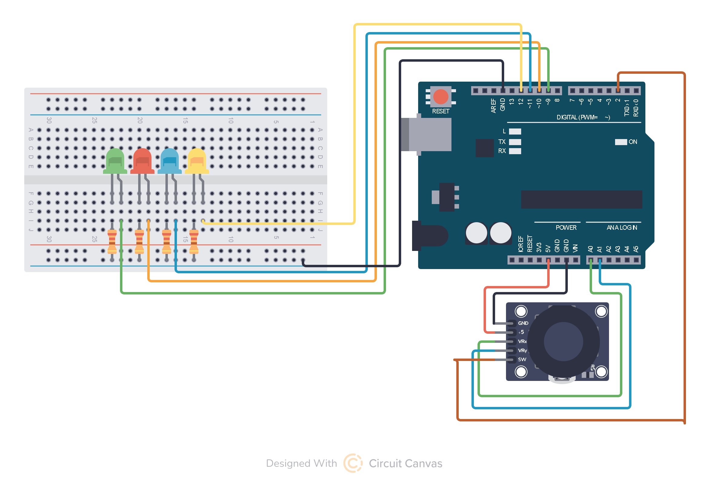

🕹️ ИНЖЕНЕРНЫЕ ЭКСПЕРИМЕНТЫ
0%
Загрузка компонентов...
⚡ Подготовка 7 экспериментов
🕹️ ДЖОЙСТИК · 7 ИНЖЕНЕРНЫХ ЭКСПЕРИМЕНТОВ
Принцип работы: внутри джойстика два потенциометра (переменных резистора). Один измеряет положение по оси X, второй — по Y.
При движении ручки меняется сопротивление, Arduino считывает напряжение на аналоговых пинах.
🔌 БАЗОВОЕ ПОДКЛЮЧЕНИЕ (все эксперименты)
VCC → 5V (питание)
GND → GND (земля)
VRx → A0 (ось X)
VRy → A1 (ось Y)
SW → D2 (кнопка)
📌 ЭКСПЕРИМЕНТ 1 · ЧТЕНИЕ КООРДИНАТ
analogRead() · Две оси · Монитор порта
Джойстик в покое показывает среднее значение (~512). Чем дальше от центра, тем ближе значение к 0 или 1023.
⬅️ ЛЕВО: 0
🎯 ЦЕНТР: ~512
ПРАВО ➡️: 1023
// ЭКСПЕРИМЕНТ 1: Чтение координат джойстика
// Мониторинг положения по осям X и Y, состояние кнопки
#define PIN_X A0
#define PIN_Y A1
#define PIN_SW 2
void setup() {
pinMode(PIN_SW, INPUT_PULLUP); // Кнопка с подтяжкой
Serial.begin(9600);
Serial.println("=== ДЖОЙСТИК: РЕЖИМ ИЗМЕРЕНИЙ ===");
Serial.println("X (0-1023) | Y (0-1023) | Кнопка");
}
void loop() {
int x = analogRead(PIN_X);
int y = analogRead(PIN_Y);
int btn = digitalRead(PIN_SW); // LOW = нажата (из-за PULLUP)
Serial.print("X: ");
Serial.print(x);
Serial.print(" | Y: ");
Serial.print(y);
Serial.print(" | Кнопка: ");
Serial.println(btn == LOW ? "НАЖАТА" : "---");
delay(200);
}
🔬 ФАКТ О КОДЕ: INPUT_PULLUP активирует внутренний резистор, подтягивающий пин к 5В. Поэтому в покое читаем HIGH, при нажатии (кнопка замыкает на GND) — LOW. Именно поэтому условие btn == LOW означает "нажата".
📊 ФИЗИКА ПРОЦЕССА: Джойстик — это два перпендикулярных потенциометра. Внутри каждой оси — резистивная дорожка и ползунок. При движении меняется сопротивление от 0 до 10 кОм, что соответствует напряжению от 0 до 5В [citation:7].
📌 ЭКСПЕРИМЕНТ 2 · ОПРЕДЕЛЕНИЕ НАПРАВЛЕНИЙ
Условные операторы · 4 стороны + центр

// ЭКСПЕРИМЕНТ 2: Определение направления
// Зажигаем соответствующий светодиод при движении джойстика
#define PIN_X A0
#define PIN_Y A1
#define LED_UP 9
#define LED_DOWN 10
#define LED_LEFT 11
#define LED_RIGHT 12
int center = 512;
int threshold = 300; // Зона нечувствительности вокруг центра
void setup() {
pinMode(LED_UP, OUTPUT);
pinMode(LED_DOWN, OUTPUT);
pinMode(LED_LEFT, OUTPUT);
pinMode(LED_RIGHT, OUTPUT);
Serial.begin(9600);
}
void loop() {
int x = analogRead(PIN_X);
int y = analogRead(PIN_Y);
// Гасим все светодиоды
digitalWrite(LED_UP, LOW);
digitalWrite(LED_DOWN, LOW);
digitalWrite(LED_LEFT, LOW);
digitalWrite(LED_RIGHT, LOW);
// Определяем направление
if (y > center + threshold) {
digitalWrite(LED_UP, HIGH);
Serial.println("⬆️ ВВЕРХ");
}
else if (y < center - threshold) {
digitalWrite(LED_DOWN, HIGH);
Serial.println("⬇️ ВНИЗ");
}
else if (x < center - threshold) {
digitalWrite(LED_LEFT, HIGH);
Serial.println("⬅️ ВЛЕВО");
}
else if (x > center + threshold) {
digitalWrite(LED_RIGHT, HIGH);
Serial.println("➡️ ВПРАВО");
}
else {
Serial.println("⚫ ЦЕНТР");
}
delay(100);
}
🎯 ФАКТ О ЛОГИКЕ: Приоритет условий важен! Если сначала проверять LEFT/RIGHT, а потом UP/DOWN — диагонали будут определяться неправильно. В данной версии приоритет у вертикальных движений [citation:1].
📏 МЁРТВАЯ ЗОНА: Порог threshold создаёт "мёртвую зону" вокруг центра. Это защита от дребезга — даже если джойстик немного не в центре, мы не реагируем. В профессиональных джойстиках мёртвая зона может достигать 10% от всего хода.
📌 ЭКСПЕРИМЕНТ 3 · УПРАВЛЕНИЕ СЕРВОПРИВОДОМ
map() · Угол поворота · Обратная связь
// ЭКСПЕРИМЕНТ 3: Управление сервоприводом по оси X
// Положение джойстика = угол поворота сервы
#include
#define PIN_X A0
#define SERVO_PIN 9
Servo myServo;
int center = 512;
int tolerance = 20; // Зона нечувствительности
void setup() {
myServo.attach(SERVO_PIN);
myServo.write(90); // Центр
Serial.begin(9600);
Serial.println("=== СЕРВО-ДЖОЙСТИК ===");
}
void loop() {
int x = analogRead(PIN_X);
// Преобразуем 0-1023 в 0-180 градусов
int angle = map(x, 0, 1023, 0, 180);
// Ограничиваем для безопасности
angle = constrain(angle, 0, 180);
myServo.write(angle);
// Отладка
static unsigned long lastPrint = 0;
if (millis() - lastPrint > 300) {
lastPrint = millis();
Serial.print("X: ");
Serial.print(x);
Serial.print(" → Угол: ");
Serial.println(angle);
}
delay(15); // Стабильность сервы
}
🔄 ФАКТ О MAP: Функция map() пропорционально переносит значение из одного диапазона в другой. При движении джойстика от упора до упора сервопривод поворачивается от 0° до 180°. Это основа управления роборуками и камерами [citation:7].
⚙️ РЕАЛЬНОЕ ПРИМЕНЕНИЕ: Именно так управляются камеры видеонаблюдения (PTZ-камеры), поворотные платформы, антенны спутниковой связи. Оператор двигает джойстик — камера поворачивается.
📌 ЭКСПЕРИМЕНТ 4 · УПРАВЛЕНИЕ ЯРКОСТЬЮ (ШИМ)
Две оси = два канала · RGB-смешение
// ЭКСПЕРИМЕНТ 4: Управление RGB-светодиодом
// Ось X = красный канал, ось Y = синий канал
// Кнопка = зелёный канал (вкл/выкл)
#define PIN_X A0
#define PIN_Y A1
#define PIN_SW 2
#define PIN_RED 9 // PWM
#define PIN_GREEN 10 // PWM
#define PIN_BLUE 11 // PWM
bool greenState = false;
bool lastButtonState = HIGH;
void setup() {
pinMode(PIN_SW, INPUT_PULLUP);
pinMode(PIN_RED, OUTPUT);
pinMode(PIN_GREEN, OUTPUT);
pinMode(PIN_BLUE, OUTPUT);
Serial.begin(9600);
Serial.println("=== RGB-МИКШЕР ===");
}
void loop() {
int x = analogRead(PIN_X);
int y = analogRead(PIN_Y);
bool btn = digitalRead(PIN_SW);
// Обработка кнопки (переключение зелёного)
if (btn == LOW && lastButtonState == HIGH) {
greenState = !greenState;
delay(50); // Антидребезг
Serial.print("Зелёный: ");
Serial.println(greenState ? "ВКЛ" : "ВЫКЛ");
}
lastButtonState = btn;
// Преобразуем координаты в яркость
int red = map(x, 0, 1023, 0, 255);
int blue = map(y, 0, 1023, 0, 255);
int green = greenState ? 255 : 0;
// Применяем
analogWrite(PIN_RED, red);
analogWrite(PIN_GREEN, green);
analogWrite(PIN_BLUE, blue);
// Отладка
static unsigned long lastPrint = 0;
if (millis() - lastPrint > 500) {
lastPrint = millis();
Serial.print("R:");
Serial.print(red);
Serial.print(" G:");
Serial.print(green);
Serial.print(" B:");
Serial.println(blue);
}
delay(10);
}
🎨 ТЕОРИЯ ЦВЕТА: Любой цвет на экране — это комбинация красного, зелёного и синего. Джойстик позволяет создавать цвета в реальном времени: X отвечает за красноту, Y — за синеву, кнопка добавляет зелёный. Это наглядная демонстрация аддитивного синтеза.
⚡ ШИМ: analogWrite() использует широтно-импульсную модуляцию. 0 = 0% яркости, 127 = 50%, 255 = 100%. Частота ШИМ на пинах 9 и 10 — 490 Гц, на 3,5,6,11 — 980 Гц [citation:5].
📌 ЭКСПЕРИМЕНТ 5 · LCD-ДИСПЛЕЙ (I2C)
Вывод информации · Библиотека LiquidCrystal_I2C
// ЭКСПЕРИМЕНТ 5: Вывод координат на LCD 16x2 I2C
// Для работы нужна библиотека LiquidCrystal_I2C
#include
#include
#define PIN_X A0
#define PIN_Y A1
#define PIN_SW 2
// Адрес I2C чаще всего 0x27 или 0x3F
LiquidCrystal_I2C lcd(0x27, 16, 2);
int center = 512;
int threshold = 100;
void setup() {
pinMode(PIN_SW, INPUT_PULLUP);
lcd.init(); // Инициализация LCD
lcd.backlight(); // Включаем подсветку
lcd.setCursor(0, 0);
lcd.print("Joystick Ready");
delay(1000);
lcd.clear();
Serial.begin(9600);
}
void loop() {
int x = analogRead(PIN_X);
int y = analogRead(PIN_Y);
bool btn = digitalRead(PIN_SW);
// Очищаем и выводим на LCD
lcd.setCursor(0, 0);
lcd.print("X:");
lcd.print(x);
lcd.print(" ");
// Визуальная шкала для X
int bars = map(x, 0, 1023, 0, 8);
lcd.setCursor(7, 0);
for (int i = 0; i < bars; i++) lcd.print("█");
for (int i = bars; i < 8; i++) lcd.print("░");
lcd.setCursor(0, 1);
lcd.print("Y:");
lcd.print(y);
lcd.print(" ");
// Визуальная шкала для Y
bars = map(y, 0, 1023, 0, 8);
lcd.setCursor(7, 1);
for (int i = 0; i < bars; i++) lcd.print("█");
for (int i = bars; i < 8; i++) lcd.print("░");
// Кнопка на последних символах
lcd.setCursor(15, 0);
lcd.print(btn == LOW ? "P" : " ");
delay(50);
}
📟 ФАКТ ОБ I2C: Шина I2C позволяет подключать до 128 устройств всего по двум проводам (SDA, SCL). Адрес устройства указывается в даташисте: для большинства LCD-модулей это 0x27 или 0x3F [citation:8]. Библиотека LiquidCrystal_I2C сильно упрощает работу — не нужно управлять тактовыми сигналами вручную.
🇷🇺 КИРИЛЛИЦА: Для вывода русских букв нужно использовать таблицу знакогенератора. Например, буква "Я" соответствует коду \xB1. Строка "Привет" выводится как lcd.print("\xAF\xC0\xA8\xA2\xA5\xE2") [citation:8].
📌 ЭКСПЕРИМЕНТ 6 · УПРАВЛЕНИЕ ШАГОВЫМ ДВИГАТЕЛЕМ
Направление · Скорость · Драйвер ULN2003
// ЭКСПЕРИМЕНТ 6: Управление шаговым двигателем
// Ось X: влево-вправо = против часов-по часов
// Отклонение от центра = скорость вращения
#define PIN_X A0
#define PIN_SW 2
// Пины для драйвера ULN2003
#define IN1 8
#define IN2 9
#define IN3 10
#define IN4 11
// Последовательность для полного шага
int stepSequence[4][4] = {
{1, 0, 0, 1}, // Шаг 1
{1, 0, 0, 0}, // Шаг 2
{0, 1, 0, 0}, // Шаг 3
{0, 1, 0, 1} // Шаг 4
};
int stepIndex = 0;
int center = 512;
int deadZone = 50;
void setup() {
pinMode(IN1, OUTPUT);
pinMode(IN2, OUTPUT);
pinMode(IN3, OUTPUT);
pinMode(IN4, OUTPUT);
pinMode(PIN_SW, INPUT_PULLUP);
Serial.begin(9600);
Serial.println("=== ШАГОВЫЙ ДВИГАТЕЛЬ ===");
}
void loop() {
int x = analogRead(PIN_X);
bool btn = digitalRead(PIN_SW);
// Определяем направление и скорость
int direction = 0; // 0 = стоп, 1 = по часовой, -1 = против
int speed = 0;
if (x > center + deadZone) {
direction = 1; // По часовой
speed = map(x, center + deadZone, 1023, 1, 10);
}
else if (x < center - deadZone) {
direction = -1; // Против часовой
speed = map(x, 0, center - deadZone, 10, 1);
}
// Если кнопка нажата — инвертируем направление
if (btn == LOW) direction *= -1;
// Выполняем шаг, если есть движение
if (direction != 0) {
// Делаем один шаг в нужном направлении
for (int i = 0; i < 4; i++) {
digitalWrite(IN1, stepSequence[stepIndex][0]);
digitalWrite(IN2, stepSequence[stepIndex][1]);
digitalWrite(IN3, stepSequence[stepIndex][2]);
digitalWrite(IN4, stepSequence[stepIndex][3]);
stepIndex += direction;
if (stepIndex < 0) stepIndex = 3;
if (stepIndex > 3) stepIndex = 0;
delay(15 - speed); // Чем больше speed, тем меньше задержка
}
}
// Отладка
static unsigned long lastPrint = 0;
if (millis() - lastPrint > 300) {
lastPrint = millis();
Serial.print("X: ");
Serial.print(x);
Serial.print(" | Напр: ");
Serial.print(direction == 1 ? "CW " : (direction == -1 ? "CCW" : "STOP"));
Serial.print(" | Скорость: ");
Serial.println(speed);
}
}
⚙️ ФАКТ О ШАГОВЫХ ДВИГАТЕЛЯХ: В отличие от сервопривода, шаговый двигатель может вращаться непрерывно и с очень высокой точностью. 28BYJ-48 делает 4096 шагов на полный оборот (режим полушага). Каждый шаг — это поворот на ~0.088° [citation:6].
🔄 ПОСЛЕДОВАТЕЛЬНОСТЬ ШАГОВ: Для вращения нужно подавать напряжение на катушки в определённом порядке. В коде используется full-step режим (4 состояния). Изменение порядка на обратный меняет направление вращения.
📌 ЭКСПЕРИМЕНТ 7 · ПОЛНОЦЕННЫЙ ПУЛЬТ УПРАВЛЕНИЯ
Все режимы в одном · Переключение кнопкой
// ЭКСПЕРИМЕНТ 7: Многофункциональный пульт
// Кнопкой переключаем режимы, джойстиком управляем
#include
#include
#include
#define PIN_X A0
#define PIN_Y A1
#define PIN_SW 2
LiquidCrystal_I2C lcd(0x27, 16, 2);
Servo myServo;
// Пины для устройств
#define SERVO_PIN 9
#define LED_R 10
#define LED_G 11
#define LED_B 12
int mode = 0; // 0-серво, 1-RGB, 2-серво+RGB
int lastButtonState = HIGH;
unsigned long lastDebounceTime = 0;
const int debounceDelay = 50;
void setup() {
pinMode(PIN_SW, INPUT_PULLUP);
pinMode(LED_R, OUTPUT);
pinMode(LED_G, OUTPUT);
pinMode(LED_B, OUTPUT);
myServo.attach(SERVO_PIN);
myServo.write(90);
lcd.init();
lcd.backlight();
lcd.setCursor(0, 0);
lcd.print("Multi Joystick");
lcd.setCursor(0, 1);
lcd.print("Mode:Servo");
Serial.begin(9600);
Serial.println("=== МУЛЬТИ-ПУЛЬТ ===");
}
void loop() {
int x = analogRead(PIN_X);
int y = analogRead(PIN_Y);
int btn = digitalRead(PIN_SW);
// Обработка кнопки с антидребезгом
if (btn == LOW && lastButtonState == HIGH &&
(millis() - lastDebounceTime) > debounceDelay) {
lastDebounceTime = millis();
mode++;
if (mode > 2) mode = 0;
lcd.setCursor(5, 1);
switch(mode) {
case 0: lcd.print("Servo "); break;
case 1: lcd.print("RGB "); break;
case 2: lcd.print("Servo+RGB"); break;
}
Serial.print("Режим: ");
Serial.println(mode);
}
lastButtonState = btn;
// Выполняем действия в зависимости от режима
switch(mode) {
case 0: // Только серво
{
int angle = map(x, 0, 1023, 0, 180);
myServo.write(angle);
lcd.setCursor(0, 0);
lcd.print("Angle:");
lcd.print(angle);
lcd.print(" ");
}
break;
case 1: // Только RGB
{
int r = map(x, 0, 1023, 0, 255);
int g = map(y, 0, 1023, 0, 255);
int b = (btn == LOW) ? 255 : 0;
analogWrite(LED_R, r);
analogWrite(LED_G, g);
analogWrite(LED_B, b);
lcd.setCursor(0, 0);
lcd.print("R:");
lcd.print(r);
lcd.print(" G:");
lcd.print(g);
lcd.print(" ");
}
break;
case 2: // Всё вместе
{
int angle = map(x, 0, 1023, 0, 180);
myServo.write(angle);
int brightness = map(y, 0, 1023, 0, 255);
analogWrite(LED_R, brightness);
analogWrite(LED_G, brightness);
analogWrite(LED_B, brightness);
lcd.setCursor(0, 0);
lcd.print("A:");
lcd.print(angle);
lcd.print(" B:");
lcd.print(brightness);
lcd.print(" ");
}
break;
}
delay(20);
}
🎮 ФАКТ О ПРОМЫШЛЕННЫХ ПУЛЬТАХ: Настоящие пульты управления (например, для экскаваторов или кранов) используют точно такой же принцип: один джойстик может управлять разными механизмами в зависимости от режима. Разница только в надёжности компонентов и защите от пыли/влаги.
🔄 АНТИДРЕБЕЗГ: Механические кнопки при нажатии создают серию ложных срабатываний (дребезг). В коде используется временная фильтрация: после первого нажатия мы игнорируем все изменения в течение 50 мс. Это стандартный промышленный подход [citation:7].
📋 СПЕЦИФИКАЦИЯ КОМПОНЕНТОВ
| Компонент |
Назначение |
Подключение |
Примечание |
| 🕹️ Джойстик |
Двухосевой аналоговый ввод |
VCC→5V, GND→GND, VRx→A0, VRy→A1, SW→D2 |
Возвращает 0–1023 по осям |
| 💡 Светодиоды (4) |
Индикация направлений |
Анод → пины 9-12 через 220Ω, катод → GND |
Для PWM нужны 9,10,11 |
| 🔄 Сервопривод |
Поворот на угол |
Сигнал → D9, +5V, GND |
Диапазон 0–180° |
| 🎨 RGB-светодиод |
Цветовой микшер |
R→9, G→10, B→11 через 220Ω, GND |
Общий катод |
| 📟 LCD 16x2 I2C |
Текстовый вывод |
VCC→5V, GND→GND, SDA→A4, SCL→A5 |
Адрес 0x27 или 0x3F |
| ⚙️ Шаговый двигатель |
Точное вращение |
IN1-4 → D8-11, +5V, GND |
С драйвером ULN2003 |
📌 ЗАДАЧИ ДЛЯ САМОСТОЯТЕЛЬНОЙ РАБОТЫ
🔹 Уровень 1 (базовый)
- Добавить второй светодиод на каждое направление (всего 4 пары)
- Реализовать "двойной клик" кнопки (два быстрых нажатия) для сброса
- Выводить на LCD не только координаты, но и "X: лево/центр/право"
🔸 Уровень 2 (средний)
- Создать "графический эквалайзер" — чем дальше отклонение, тем больше светодиодов загорается (пилообразная шкала)
- Подключить два сервопривода (X и Y) для управления платформой с двумя степенями свободы
- Записывать последовательность движений джойстика в массив и воспроизводить по кнопке
🔹 Уровень 3 (продвинутый)
- Реализовать "квадратичную" характеристику: чувствительность растёт с отклонением (нелинейное управление)
- Сделать программируемый джойстик: запись макросов (последовательностей действий) в EEPROM
- Управлять двумя шаговыми двигателями для координатного стола (X-Y plotter)
🏭 РЕАЛЬНЫЕ ПРИМЕНЕНИЯ ДЖОЙСТИКОВ
🚜 Строительная техника
Джойстики управляют гидравликой экскаваторов — каждое движение соответствует повороту ковша, стрелы, рукояти.
🎮 Игровые контроллеры
Геймпады PlayStation/Xbox используют точно такие же потенциометры, только миниатюрные.
🦾 Протезы и экзоскелеты
Джойстики (иногда подбородочные) позволяют управлять инвалидными колясками или роборуками.
✈️ Авиация
В кабинах самолётов джойстики (RSS — side stick) заменяют традиционные штурвалы [citation:7].
📹 PTZ-камеры
Джойстик управляет поворотом камеры (Pan) и наклоном (Tilt) в системах видеонаблюдения.
⚕️ Медицина
Хирургические роботы da Vinci копируют движения рук хирурга с помощью джойстиков.
📌 ВЫВОДЫ
Что вы изучили:
- ✓ Чтение двух аналоговых осей (X/Y)
- ✓ Обработка кнопки с антидребезгом
- ✓ Управление сервоприводом (угол поворота)
- ✓ ШИМ-управление RGB-светодиодом
- ✓ Вывод на LCD через I2C
- ✓ Управление шаговым двигателем
- ✓ Многорежимные системы управления
Дальнейшие темы:
- ➡ Беспроводной джойстик (nRF24L01 + второй Arduino)
- ➡ Управление шаговыми двигателями с микрошагом
- ➡ Сглаживание сигнала (фильтр Калмана)
- ➡ Интерполяция траекторий (плавное движение)